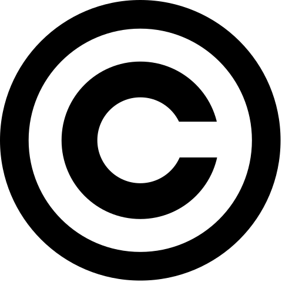
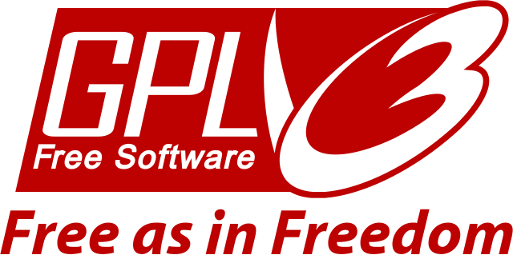

Copyright¶
El derecho de autor o copyright es una ley que protege las obras creativas y permite que solo el autor decida cómo se usan, copian, distribuyen, adapten o exhiban sus obras.
Entre las obras creativas protegidas por derecho de autor se incluyen fotografías, dibujos, películas y vídeos, obras literarias, trabajos escolares, esculturas, música, investigaciones científicas, programas de ordenador, entre otras.
{kind=link}

Logotipo de derechos de autor reservados (copyright).¶
El derecho de autor protege las expresiones creativas, pero no las ideas, hechos, conocimientos o conceptos generales. Por eso, una obra puede tratar sobre un niño que descubre que es mago y asiste a una escuela de magia sin infringir ningún derecho de autor, ya que lo protegido es la novela de Harry Potter, no su estilo ni su idea general.
No todas las creaciones están protegidas por derecho de autor (copyright). Por ejemplo, las invenciones técnicas se protegen mediante patentes, mientras que los logotipos y marcas comerciales cuentan con otras formas de protección legal.
Todas las obras quedan protegidas por derechos de autor desde el momento en que se crean. Aunque no es obligatorio registrarlas, sí es recomendable hacerlo en el registro de propiedad intelectual para poder demostrar la autoría.
Tipos de derechos¶
- Derechos morales.
Estos derechos no se pueden ceder a otros ni se pierden nunca.
- Reconocimiento de quién es el autor de la obra.
- Oposición a modificaciones de la obra que atenten contra el honor o reputación del autor.
- Derechos económicos.
Estos derechos se pueden ceder a través de una licencia.
- Reproducción.
- Distribución.
- Traducción a otras lenguas.
- Adaptación o modificación de la obra.
Cesión de derechos¶
Un autor puede ceder a otras personas o empresas sus derechos de copia, distribución o exhibición de una obra, por ejemplo a una editorial, una discográfica o una red social. Esto se realiza mediante contratos donde se establecen las condiciones de la cesión.
Al crear una cuenta en una red social, aceptamos un contrato de cesión por el cual nuestras fotos, textos o vídeos pueden ser publicados y utilizados por la plataforma, a menudo con muy pocas limitaciones.
Existen también contratos estándar llamados licencias libres. Estas permiten a un autor conceder permisos a cualquier persona interesada en su obra sin necesidad de pedir autorización directa, favoreciendo la difusión y creación de nuevas obras a partir de las originales.
Copyleft¶
Las licencias copyleft son un tipo de licencias libres que el autor puede aplicar a su obra para permitir que otras personas la usen, copien, distribuyan o modifiquen. La condición principal es que cualquier versión modificada o derivada debe mantenerse bajo la misma licencia copyleft, garantizando que la obra y sus derivados sigan siendo libres.
Logotipo de copyleft (algunos derechos de autor reservados).¶
Este tipo de licencias fomentan el acceso al conocimiento, su difusión y la creación colaborativa de cultura, lo que explica su gran importancia.
Algunos ejemplos de licencias copyleft son la licencia Creative Commons BY-SA y la licencia de software GPL.
Creative Commons BY-SA¶
La organización sin ánimo de lucro Creative Commons ha creado varias licencias estándar de cesión de derechos para fomentar la cultura libre.
Una de las licencias más conocidas es la CC BY-SA (Reconocimiento-Compartir Igual), utilizada por Wikipedia para difundir sus contenidos. Esta licencia permite copiar, publicar y crear obras derivadas, siempre que se reconozca al autor original y que las obras resultantes se publiquen bajo la misma licencia CC BY-SA.
Logotipo de la licencia Creative Commons Reconocimiento-Compartir igual.¶
Un estudiante puede añadir junto a su nombre, en un trabajo escrito, dibujo o póster, la frase:
"Bajo licencia CC BY-SA 4.0".
Estará diciendo a los demás que pueden usar su obra en sus propios trabajos. Solo tienen que mencionar quién es el autor original y compartir lo que hagan con la misma licencia.
Licencia GPL¶
La licencia GPL (General Public License) es una licencia destinada exclusivamente al software de ordenador. Por ejemplo, se utiliza en Linux, que es el núcleo de los teléfonos Android.
Esta licencia permite usar el software libremente, estudiar su funcionamiento, copiarlo y modificarlo. La única condición que impone es que cualquier modificación se publique también como código abierto y bajo la misma licencia libre GPL, garantizando que siga siendo libre.
{kind=link}

Logotipo de la licencia de software GPL versión 3.¶
La idea principal de la licencia GPL es fomentar la colaboración y la transparencia. Esta licencia garantiza que el software siga siendo libre, incluso cuando otras personas lo modifican o mejoran.
Dominio público¶
Cuando han pasado muchos años desde la muerte del autor (por lo general 70), sus obras se vuelven de dominio público. Esto quiere decir que cualquier persona puede copiarla, modificarla, publicarla o usarla libremente sin pedir permiso.
Logotipo de dominio público (sin derechos de autor).¶
El autor también puede decidir regalar su obra al dominio público en cualquier momento, para que todos puedan usarla libremente sin pedir permiso.
Ejercicios¶
- ¿Qué es el derecho de autor o copyright? ¿Alguna vez has creado una obra que tenga derecho de autor? Explica brevemente.
- ¿Qué derechos tiene un autor sobre su obra solo por crearla?
- ¿Desde cuándo una obra está protegida por derechos de autor?
- ¿Qué diferencia hay entre derechos de autor y una patente?
- ¿Qué obras están protegidas por derechos de autor? Escribe 5 ejemplos.
- Nombra tres ideas, hechos o conceptos que no estén protegidos por derechos de autor.
- ¿Qué significa ceder los derechos de una obra a una red social?
- Escribe dos tipos de obras que no estén protegidas por los derechos de autor. Da un ejemplo de cada una.
- Escribe con tus palabras qué es copyleft.
- Escribe dos ejemplos de licencias copyleft.
- ¿Por qué crees que las licencias de Creative Commons fomentan la difusión y creación cultural? Escribe un ejemplo práctico de su uso.
- ¿Para qué sirve una licencia GPL? Escribe un ejemplo que utilice esta licencia.
- ¿Qué significa que una obra esté en dominio público?
- Da un ejemplo de una obra clásica que sea de dominio público.
- ¿Cuándo pasa una obra a dominio público?
- Dibuja los logotipos de copyright, copyleft y dominio público.
- Investiga qué es el convenio de Berna para la protección de obras y redacta a mano un breve trabajo de una hoja por las dos caras.
Recursos¶
Documento en formato DIN A4 con la unidad y los ejercicios:
Enlaces para ampliar conocimientos: